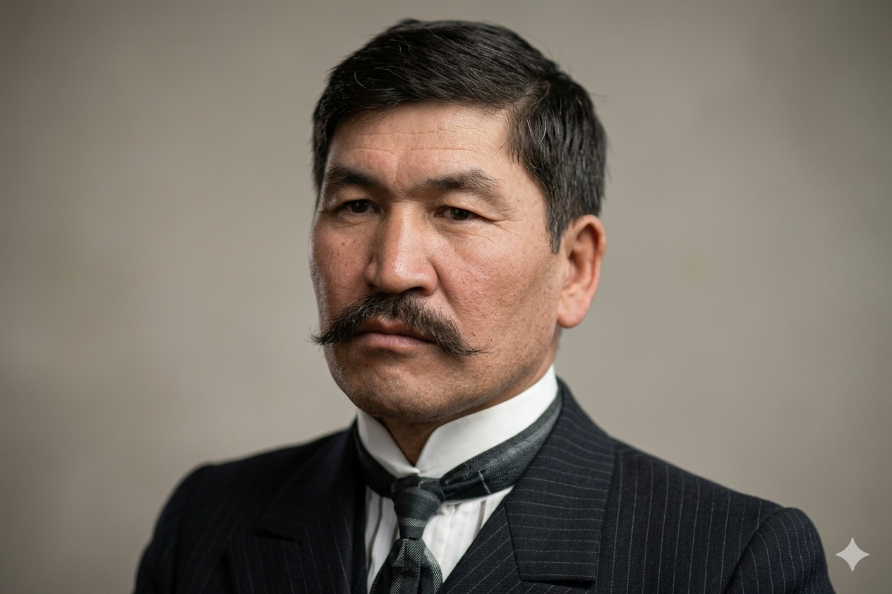
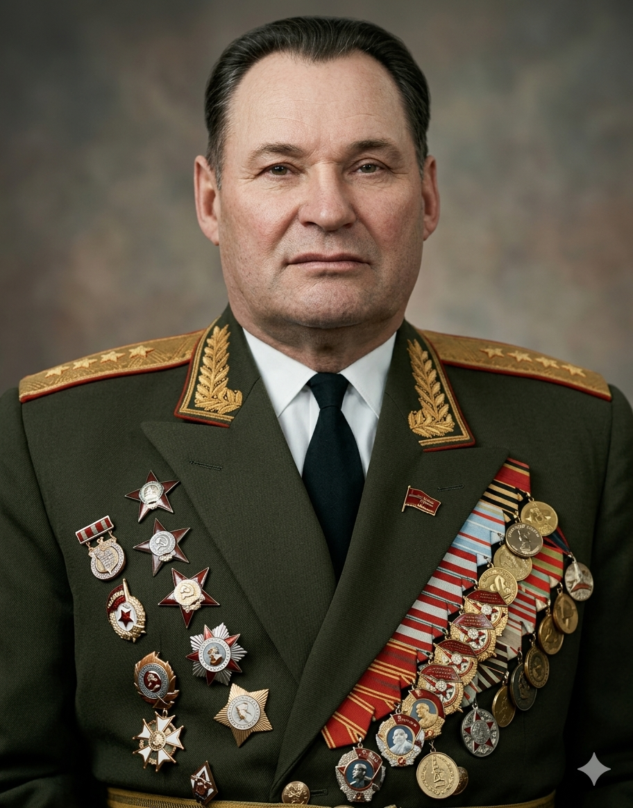
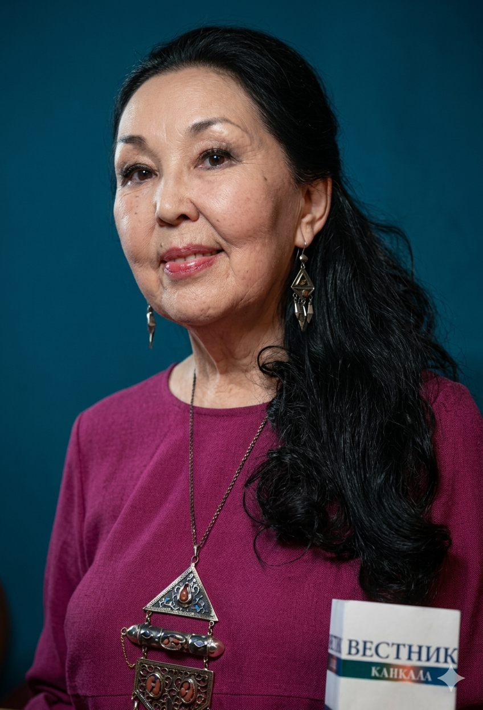
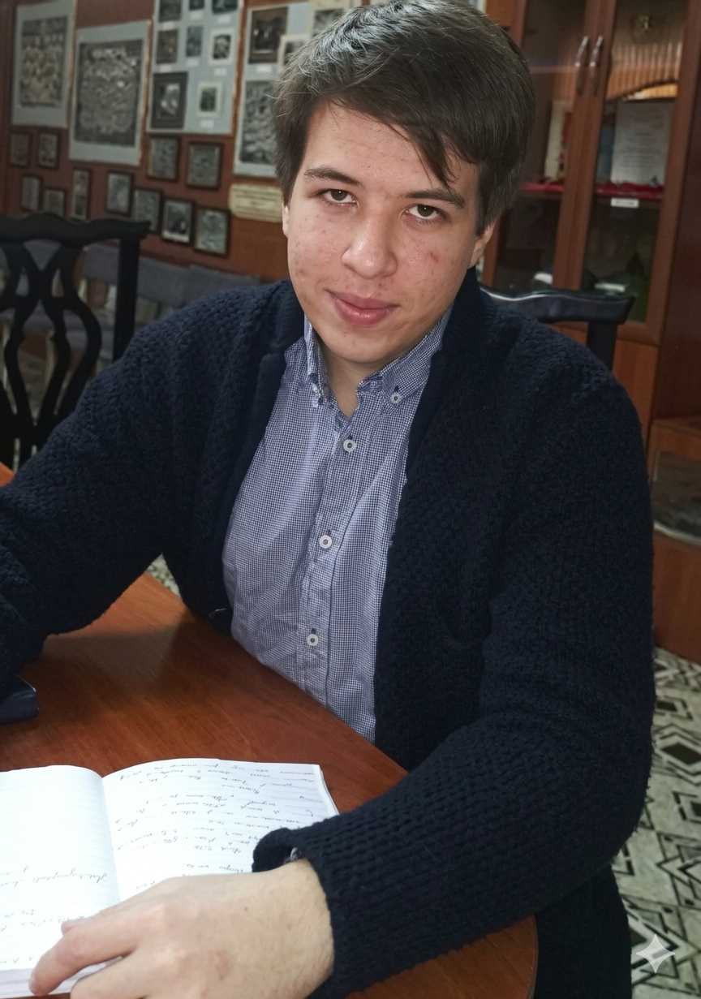

Летопись успеха и гордости
Интерактивное издание

"Имя Алихана Бокейханова — символ просвещения, исторической справедливости и непреклонного стремления к свободе духа."
Гимназия с гордостью носит имя лидера движения «Алаш», транслируя подрастающему поколению непреходящие ценности служения обществу, патриотизма и академического лидерства.
Выдающийся военачальник, панфиловец, Герой Советского Союза и знаменитый писатель. Его путь к бессмертной славе начинался в стенах нашей школы.

Его жизненный и боевой путь служат для гимназистов примером высочайшего профессионализма и верности долгу.
В 1990 году удостоен звания Героя. Его мемуары «Годы в шинели» бережно хранятся в музее.
Юрий Киселев (Выпуск 1947 г.): Доктор исторических наук, профессор. Заслуженный деятель и отличник просвещения КазССР.
Александр Савченко (Выпуск 1968 г.): Прошел масштабный путь от рабочего до Депутата Сената Парламента РК. Награжден орденом «Курмет».
Еркенбек Кульджабаев (Выпуск 1955 г.): Крупный ученый-производственник, вице-президент Инженерной академии РК.

Выпускница 1973 года. Заслуженный деятель Казахстана. Ее сборники изданы в Лондоне и Париже. Произведения включены в школьные хрестоматии:
«Полынный ветер» • «Кочевые просторы души»

Выпускник 2013 года. Победитель престижной Международной олимпиады школьников «Туймаада» по химии.
Завоевал абсолютное первое место, получив эксклюзивный приз — настоящий якутский бриллиант за идеальное решение сложнейших задач. Ныне — кандидат химических наук.
Гимназия №1 имени Алихана Бокейханова — это неразрывный сплав великой истории, традиций и инновационного будущего.
Контакты учебного заведения:
💻 Веб-сайт: 1-taraz.mektebi.kz
📞 Телефон: +7 (7262) 43-17-01
"Мы не просто храним историю — мы используем её код для программирования будущего."